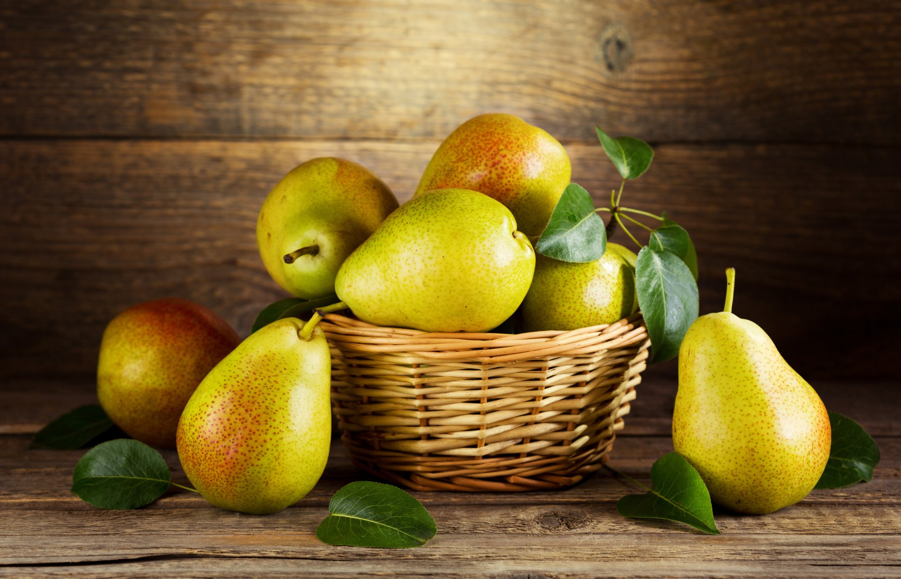
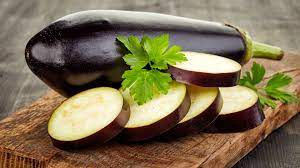
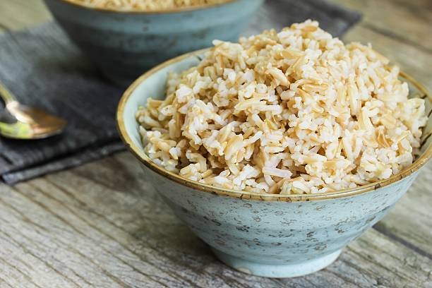
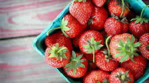
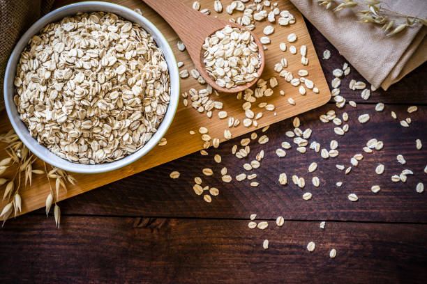
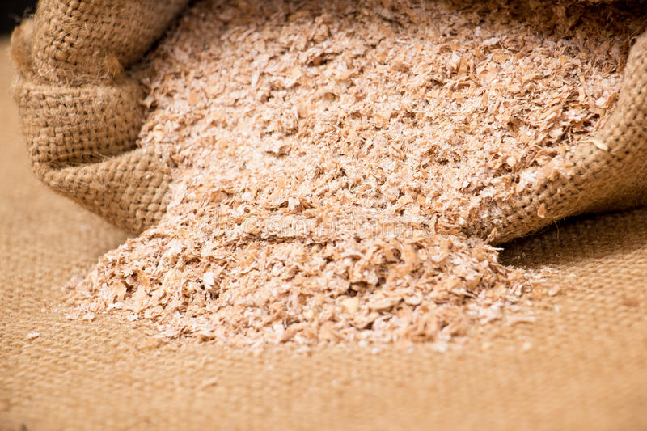
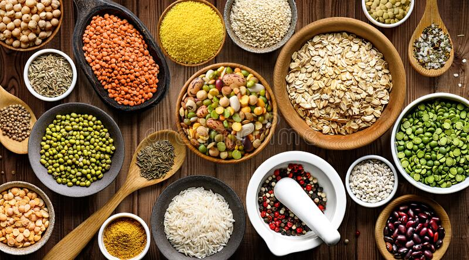

Abaixo listamos esses alimentos:
.Pera 
A pera é rica em água e contém 71% de fibras insolúveis, garantindo maior sensação de saciedade e melhora do trânsito intestinal. Além disso, o açúcar natural da fruta tira a vontade por doces e aumenta gradualmente o açúcar do sangue, o que ajuda a reduzir a fome e a evitar o consumo de alimentos açucarados.
Como consumir: Para ajudar a emagrecer, ela deve ser consumida cerca de 20 minutos antes das refeições principais.
.CenelaA canela é um condimento aromático que pode causar um efeito termogênico no organismo, podendo aumentar o metabolismo e aumentar o processo de queima de gordura corporal.
Além disso, a canela também ajuda a reduzir os picos de açúcar no sangue, aumentar a sensibilidade à insulina e diminuir a resistência à insulina, o que também favorece a perda de peso. Outros alimentos que possuem propriedades termogênicas são o gengibre, a pimenta vermelha, o café e o chá de hibiscoitis at placeat soluta sed sequi accusamus.
Como consumir: Pode-se adicionar a canela facilmente em diversas preparações, como frutas, sucos, batidos, café, chá, bolo e bolachas, por exemplo.
.Berinjela A berinjela, além de ser uma fruta baixa em calorias, já que 100 gramas possuem apenas 24 calorias, também é rica em fibras, ajudando no bom funcionamento do intestino, no combate ao mau colesterol e à má digestão, produzindo sensação de saciedade.
Além disso, ela é rica em água, vitaminas e minerais, e pobre em calorias, ajudando a combater a retenção de líquidos e a desinchar o corpo.
Como consumir: É possível preparar a água de berinjela e beber ao longo do dia em substituição à água. Também é possível adicionar a berinjela em saladas e prepará-la em forma de chips, por exemplo.
.Arroz Integral O arroz integral, diferentemente do arroz branco, é rico em fibras, ajudando a aumentar a saciedade e fazendo com que a quantidade de alimentos ingeridos seja menor. Também é rico em vitaminas do complexo B, zinco e selênio, que são nutrientes antioxidantes que melhoram a circulação sanguínea, a concentração e a memória.
Como consumir: É importante que a quantidade a ser consumida seja controlada, porque apesar de ser um alimento integral, quando se come em excesso passa a ter o efeito contrário. No caso de se desejar saber qual é a porção adequada, o ideal é procurar orientação de um nutricionista para que seja realizada uma ava
.Morango O morango, além de possuir poucas calorias, é rico em fibras, ajudando a controlar os níveis de açúcar no sangue e aumentar a sensação de saciedade, diminuindo as quantidades de calorias diárias ingeridas e promovendo a perda de peso. Também é rica em vitamina C, folato e outros compostos fenólicos que proporcionam efeitos antioxidantes e anti-inflamatórios.
Como consumir: Esta fruta pode ser consumida inteira ou em sucos, podendo inclusive ser utilizada na preparação de sucos detox para melhorar o metabolismo.
.Linhaça
A linhaça é rica em antioxidantes e ômega-3, um tipo de gordura boa que ajuda no controle do colesterol e que diminui a inflamação no organismo, facilitando o processo de emagrecimento. Além disso, é rica em fibras que melhoram a digestão e aumentam a saciedade.
Como consumir:O ideal é consumir os grãos de linhaça triturados ou em forma de farinha, podendo ser adicionada 1 ou 2 colheres de sopa nos cereais, saladas, sucos e iogurtes. Também pode ser acrescentada na preparação de pães, tortas e bolos.
.Chá Verde
O chá verde possui propriedades termogênicas, acelerando o metabolismo e favorecendo a queima de gordura. Isso acontece porque é rico em cafeína, um estimulante que ajuda a queimar gordura durante o exercício. Além disso, é rico em catequinas, que são potentes antioxidantes que ajudam a melhorar o metabolismo.
Como consumir:O chá verde deve ser consumido sob orientação de um médico ou nutricionista e para prepará-lo deve-se adicionar 1 colher da erva em 1 xícara de água fervente, deixando repousar por cerca de 10 minutos. Pode-se beber até 4 xícaras (de chá) do chá verde por dia.
.Aveia A aveia é rica em fibras solúveis e proteínas, que dão saciedade e regulam o intestino. Além disso, seu consumo também ajuda a regular a glicemia e controlar o colesterol alto, fazendo com que a fome demore mais tempo a chegar.
Como consumir: A aveia é bastante versátil, podendo ser consumida na forma de mingau ou acrescentada em frutas picadas, vitaminas, bolos e biscoitos.
.Ferelo de trigo O farelo de trigo é muito rico em fibras, possuindo 12,5 gramas de fibras por cada 100 gramas do alimento, e tem poucas calorias, podendo ser utilizado para combater a prisão de ventre, ajudar no controle da glicemia e aumentar a saciedade.
Como consumir: Como ele praticamente não altera o sabor dos alimentos, pode ser adicionado em todas as preparações para diminuir a absorção de gordura no intestino.
.Leguminosas LAs leguminosas como feijão, ervilha, lentilha e grão-de-bico são fontes de proteínas e fibras alimentares, que aumentam a saciedade e combatem a prisão de ventre.
consumir: Consumir 4 colheres de sopa por dia é o suficiente para obter seus benefícios, especialmente quando é consumido juntamente com o arroz integral, pois a combinação forma uma proteína de elevada qualidade.